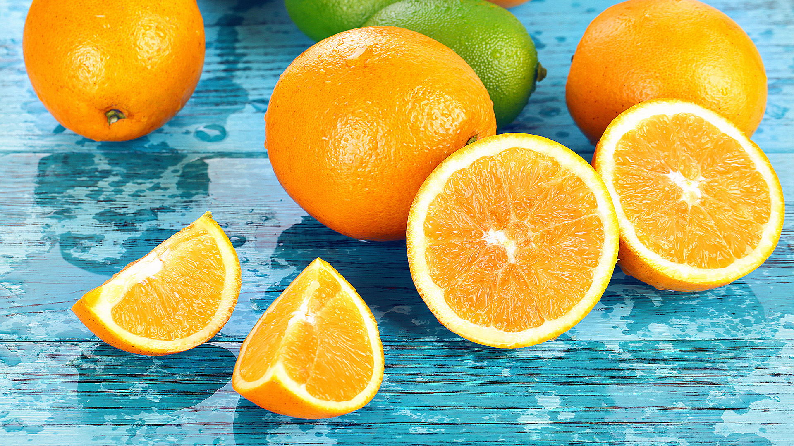

今天
热门资讯
芒果的热量高吗？
生活中有一个芒果三碗饭的说法，其实稍微有点夸张了。芒果的热量并不高， 100克可食用的芒果热量是35大卡，而一个小芒果可食部分大约有150克，热量也仅为53大卡。 由此可见芒果是热量比较低的食物，如果单纯从热量的角度来说，减肥期间是可以食用芒果的。
- 2020-05-20
- 99
- 60
饭后吃水果好吗？
在吃饭之后再吃水果是一种不好的行为，对身体不好。 在吃饭后这段时间，大家的胃肠通常都饱和了，需要较长时间来消化吸收， 而水果最好是食用之后尽快消化为宜，在饭后吃水果就会导致水果在胃内堆积发酵， 容易出现腹胀、打嗝、反酸等不适反应。而且水果往往含很多糖分， 餐后吃容易导致能量摄入过多，埋下长肉肉的风险。
- 2020-05-18
- 134
- 78
热门水果

功效：营养价值丰富,富含丰富的维生素，胡罗卜素...等营养物质
禁忌：草莓性凉，食用过多或者寒性体质的人群食用之后会加重身体内的寒性，引起脾胃虚寒
功效：清肠通便、降低血压、消除水肿、解除忧郁、保护眼睛
禁忌：香蕉不宜空腹食用，空腹吃香蕉不但影响胃酸分泌，还会因为营养摄入太单一造成贫血
你
功效：美白淡斑、防治贫血、、排毒通便、调理肠胃
禁忌：樱桃性热，吃多了容易引发上火，喉咙痛等症状，有上火，溃疡症状慎食。糖尿病患者忌食。
吃

功效：清爽解渴、味道甘味多汁。含有大量葡萄糖、果糖及丰富的维生素C等物质
禁忌：中医辨证属于脾胃虚寒、寒积腹痛、小便频数等属于虚冷体质的人均不宜多吃西瓜。
水果

功效：延缓衰老、生津止渴、止呕功效、提神醒脑、增强抵抗、清肠通便
禁忌：饭前或空腹时不宜食用橙子，否则它所含有机酸会刺激胃黏膜，对胃不利。口干不宜食用
了

功效：葡萄中的多种果酸有助于消化，适当多吃些葡萄，能健睥和胃。
禁忌：体质虚弱，脾胃有虚寒的症状的人最好不要吃新鲜的葡萄，容易导致体质下降，引发寒症入侵。
吗
关于水果
水果的妙用：熟木瓜+柿饼煎服，可治气喘性咳嗽、苹果皮+数片姜煮水：可止呕吐、经常感冒、咳嗽、气管敏感者：鲜柚留皮去核+正北杏、贝母、未经漂染银耳各一30克+蜜糖炖，强健肺部
成分：猕猴桃、鲜枣猕猴桃、鲜枣、草莓、枇杷、橙、橘、柿子、蓝莓等含有丰富的维生素C，现代家庭一般都有冰箱，许多人喜欢买大量水果放入。但水果存放的时间越长，维生素C损失就越多。
水果的功效：降血压、减缓衰老、减肥瘦身、保养皮肤、明目、癌症的天敌、降低胆固醇、排毒、
特色水果
赣南脐橙
赣南脐橙果大形正，橙红鲜艳，光洁美观，可食率达85%，内容脆嫩，化渣，风味浓甜芳香，含果汁55%以上。
赣南脐橙已被列为全国十一大优势农产品之一，荣获“中华名果”等称号。
赣南脐橙作为江西省唯一产品，入围商务部，质检总局中欧地理标志协定谈判的地理标志产品清单。
